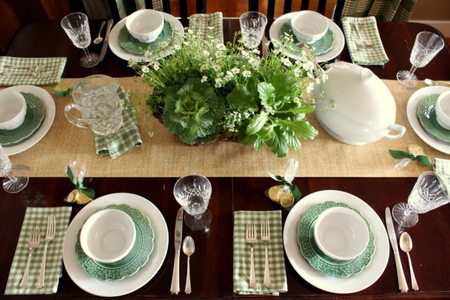

a place to talk about houses, entertaining, travel, and design.
I'm Kelly. I love to talk about houses and anything related to them. Since you have come to this place I'm guessing you probably like to do the same. Look around here a bit, and you will find rooms and houses, ideas for entertaining, places to visit, and other randomness that my brain likes to think about. If you have a question about anything, please leave a comment. I would love to talk with you!
It’s time for the green again! Â With temperatures in the eighties here today, I would say spring is just about here. Â There is green everywhere outside already (and the Bradford Pear trees are in full bloom!) Â So it is time to bring out the green inside as well.
Bye-bye red buffalo check drapes. Â Hello green plaid! As much as I love red, sometimes you just need a change of scenery with the change in the seasons, right? Â With our neutral walls, color can be easily changed with a change of the drapes.
For our St. Patrick’s Day table I simply mixed in green plates with the white dishes, added green gingham napkins and a bag of gold (chocolate) coins tied with a green ribbon. Â Kale was added to the centerpiece as a nod to cabbage for the holiday.
Green cookbooks replaced the red ones in the cabinet in the dining room.
Instead of a lucky pot of gold, we have a jar of gold…gold wrapped Rolo candies. 🙂
There are shamrock cookies in the cookie jar on the cupboard…
and green plates on the island with all the breakfast foods.
Green books, packages, and even a green colander replaced all the red items in the glass door cabinet above the kitchen desk.
I turned on the light there so that you could see the chalkboard recipe for Irish Stew. Do you cook something Irish for St. Patrick’s Day? We’ll be having Irish stew, cabbage, a salad, and a chocolate mint ice cream pie. (I don’t really think the ice cream pie is Irish, but at least it is green. 🙂 )
You’re probably thinking I have gone a little overboard with all the green…
I think you are right.
🙂
There is green in just about every spot where it can easily by added. 🙂
 Oh well.  It is my start to spring, and good way to decorate for St. Patrick’s Day.  Easter is coming, and I’ll be able to add another color to it then…or go overboard on another color! 🙂
Love the green! I love all your curtains in different colorways. Do you make the curtains or do you have them made? Enjoyed the pictures very much, thanks for sharing.
——————————————————————— Glad you liked all the green Anita! I do make most of the curtains. The ones in the playroom and the boys room were ordered from Country Curtains (I did line them myself though). I have made pretty much all the others.
Kelly
Jaybird -March 19, 2015 - 1:43 pm
This is GREAT!!!! I love the greens….
I like to decorate here and there for the holidays, but you have me beaten by a MILE…or THREE!!! Too Cute!!
I think I could happily snitch a few of your ideas and let them play out all summer long :^)
Blessings,
J
——————————————————————- You go right ahead and snitch whatever you would like. The green won’t stay here through summer because I will be wanting red back by then. Glad you liked all the green details though!
Kelly
Debra -March 19, 2015 - 11:03 am
Can’t believe St. Patrick’s Day has come and gone. I was on the look out for those darn little mini black caldrons ..but none to be found. Ugh! Love all your green “sprucing up”. Are we all ready for Spring and Summer? Yes, Mam! I loved your little centerpiece too. So cute with the touch of Kale. We took in our annual parade last weekend. It was a beautiful day. Sunny and warm, not like last year that required my sweet Target green coat and Starbucks in hand. Brrrr… There were more marching bagpipers that made my heart melt, not to mention the men in their kilts..(a little eye candy) 🙂 I only did a little decorating of the fireplace mantel and coffee table in the family room. It was simple green ivy on the kitchen table, white dishes, a new beef/mushroom gravy recipe for dinner, complete with mashed potatoes, green beans and rolls. Sweet daughter made a chocolate sheet cake to have with our mint ice cream, topped with a Andes mint. Her help is always a blessing. She is my baker. The day was so busy, as I was surprised with a treat to lunch by my second daughter and the twin grandbabies. It brought such sweet little smiles, hugs and we’ll call it (leprechaun dancing) on the restaurant front lawn afterwards. Boy, those two little ones have so much energy! Belated St. Patty’s Day to you and your family. On to Easter we go! The weeks are moving quickly, thank you daylight savings…I think? Better start getting the gardening tools handy…. 🙂
———————————————————————– It sounds like you had a wonderful St. Patrick’s Day from start to end Debra. I bet your beef/mushroom gravy dinner was a winner! YUM. And twin grand babies have to be a handful!! Yes, on to Easter we go (and Spring Break…yippee!)
Kelly
Dawn -March 18, 2015 - 6:44 pm
Kelly,
I love your home like this! As you very well know, I LOVE green! I do have lots of green in my home but I always add a bit more this time of year. The grass is just starting to replace the brown outside. I always add a few fresh flowers and some nice potted plants to home at this time. I just love Spring and can’t wait for Summer time to get here. I really like how you change out your drapes with the other added items for each season. That Irish stew recipe looks yummy and the mint ice cream pie sounds divine! I do not think you have gone over board on the green in your home. I think it is perfect for St. Patrick’s day and to welcome in Spring. Thanks for sharing! Take care.
——————————————————————– I am so glad you saw the post Dawn! I was afraid you were going to miss it, and I would have hated that knowing how much you love green. 🙂 I’m sure you house was very decked out with your favorite color for St. Patrick’s Day. Spring should be your season! I, too am glad to see all the green outside…and am listening for the sound of the lawnmower. Yes, our yard already needs it. 🙂
Kelly
Emily Gravitt -March 18, 2015 - 4:31 pm
Kelly, I, too, love plaids! Red plaids are my favorite! Thanks for sharing your seasonal displays with us. I have gotten lots of ideas to use in my own home.
———————————————————————- You are quite welcome! I am so glad that you can use some of the ideas here Emily.
Kelly
Your green looks perfect – adore the cookies and bookcases and your table…stunning! Love it all, Kelly!!
——————————————————————— You are so kind! Thank you for your compliments on the St. Patrick’s decorating, and I am glad you loved it all. It was hard to break away from my beloved red!
Kelly
I just *love* your holiday displays. I scour the photos to see all of the little details. Pasta in a green package! Green tea bags! Green pencils! You are so creative and detailed oriented. Happy St. Patrick’s Day to you.
——————————————————————— Thank you for appreciating all the little details Kim. You have a good eye!! I hope your St. Patrick’s Day was a fun one. 🙂
Kelly
Debbie V. -March 17, 2015 - 3:46 pm
Love all of the green touches and your decorating style! Where do you find all of your curtains/fabrics?
——————————————————————– Thank you Debbie! I am glad you liked all the green. In the past I ordered my fabrics from a shop that has long closed. Lately, I have ordered from http://www.decorativefabricsdirect.com/ or Forsyth Fabrics in Atlanta. My workroom and my husband’s office both have drapes made from fabrics that we purchased at Ikea. Hope this helps!
Kelly
Suky -March 17, 2015 - 9:14 am
Kelly this is all so beautiful! Very tasteful and serene, even though you’ve added so much lively green. I’m SO copying a few of your ideas! Love your Irish crystal.
——————————————————————– Thank you Suky. It is definitely more serene than all the red that was there! 🙂 You go right ahead and copy anything you would like. Imitation is the highest form of flattery. 🙂
Kelly
Gina -March 16, 2015 - 4:18 pm
I love all the green touches! I’ve added greens and yellows to my mostly neutral palet. What is it about those mini colanders that are so cute!? 🙂 granny Smith apples go a long way!! 😉
———————————————————————- Green and yellow…the perfect combo for spring to me! Yes, what is it about those colanders?? Every time I see them in the store in different colors, I have to make myself not buy them…but they are so tempting! (Obviously I gave in for the green ones. 🙂 )
Kelly
Kelly,
You really must write a book on seasonal decor. You come up with the most wonderful ideas. From the “jar of gold” to the beautiful table setting. It’s so inspirational and chock full of ideas.
xo,
Karen
———————————————————————– Girl you are always just so kind in your comments. Thank you Karen. Glad you liked all the decorating! That “jar of gold” is mighty tempting to all of us here. 🙂
Kelly
Marlene -March 16, 2015 - 1:28 pm
Kelly,
How charming with all your green and St. Patrick day touches. Just so enjoy the small check napkins on the table and you green & white plaid drapes. I love how you make things look so special. Thank you!!
———————————————————————- Thank you Marlene! The green fabrics do make such a difference.
Kelly
Hello! Your St. Patrick’s decor is simple and beautiful. I love your house and I find myself here a lot looking for inspiration. I was wondering if you would mind telling me what kind of wood your husband used for your kitchen counters. We are in the middle of a remodel and while I really want butcher block, I don’t want to have to travel 3 hours to Ikea to purchase them. This looks like a great alternative. Also, what did he use to seal and waterproof them? I appreciate your time. Have a blessed day.
Vicky
———————————————————————– Hi Vicky! The kitchen counters were made from Southern yellow pine. It is 5/4 inch lumber most commonly called “nosing lumber” or stair treads. He used clear polyurethane for sealing and waterproofing. Good luck with your remodel!
Kelly
Sandy -March 16, 2015 - 12:16 pm
Your centerpiece is marvelous. I’m duplicating it on our dining room table. Green has always been my favorite color and your home sparkles Ireland’s green. My retirement present to myself after thirty-seven teaching years was a fabulous trip to the Emerald Isle. Hope you plan a great gift for yourself too.
———————————————————————- You go right ahead and make that centerpiece Sandy! All the plants came from Lowes (and boy has it been crowded since spring is in the air!) How wonderful that you went to Ireland for your retirement trip. Love it!! I have no idea if we will do anything for mine, but I am thinking of a driving trip up the east coast when our son starts at Yale next fall or maybe a Christmas in Connecticut next December.
Kelly
Your house is my 2 favorite colors, red and green, so I always love all of your changes. I love that you even change your pencils. I celebrated St. Pat’s day with my 5 grands this weekend, with our treasure hunt for the rainbow and pot of gold {rainbow licorice and gold nugget gum and gold coins.} And we always toast the day with our traditional drink. Layer blue, green, yellow, and red popsicles {chopped up} in a tall skinny glass and add sprite. Rainbows to drink! They love it.
——————————————————————– You have a good eye for details if you spotted those pencils Sue! A treasure hunt must have been fun with 5 grandchildren. 🙂 Love your rainbow drink idea. I could use something like that right now!
Kelly
Peggy -March 16, 2015 - 11:29 am
Adoring the green! Just a breath of spring.
———————————————————————- Thank you Peggy! Bring on the spring!
Kelly
My Grandmother’s kitchen was green and I always loved it! Thanks for the reminder to shop for ingredients for Irish Stew!
——————————————————————– Green must be a good color for kitchens then Leslie Anne! 🙂 Definitely need some Irish Stew for St. Patrick’s Day!
Kelly
Donnamae -March 16, 2015 - 10:40 am
I love the change to green! Not only is there the obvious reference to St. Patrick’s Day, but also Spring! Then, after the holiday you remove the obvious references, and voilà ! You are ready for spring and beyond. I do miss the red, though…but I know it’ll be coming back! Enjoy your day! 😉
———————————————————————- You are right about the voila Donnamae. It is coming! 🙂 And yes, the red will be back for summer…got to have it with blue for the 4th of July. 🙂
Kelly
Kathy P. -March 16, 2015 - 10:30 am
Although I also love your red, this green is a bright and cheery change. Love it! Also, you Waterford Crystal glasses – just like mine. I don’t think it is overboard. Happy St. Patrick’s Day!
———————————————————————- I am glad you like the change Kathy. It is a different look from the red that was here all winter. Happy St. Patrick’s Day to you!
Kelly
Robbie Zeller -March 16, 2015 - 10:28 am
Kelly, Your home is one of my very favorites in the blog world! That thought never crossed my mind that there was too much green in your home, but rather how cozy and warm your home always looks! You do such a great job. Happiest of Spring beginnings to you!
——————————————————————— Oh my goodness what a sweet comment Robbie! Thank you for the compliments on our home. Happiest of springs to you too!!
Kelly
Elaine -March 16, 2015 - 10:00 am
There is NO such thing as too much green! LOVE your blog – a perfect start for the week – and doesn’t it promise to be a beautiful one here in Georgia! My daffodils and “olde timey” plum tree are loaded with blooms!
——————————————————————- And I bet they are beautiful Elaine! It does look like a gorgeous week is in store for us here. My son said it reached 90 degrees here today, but that may have been an exaggeration. 🙂 Thank you for reading and taking the time to leave your comment today. Have a great week!
Kelly
I have some shamrock dish towels and a friend gave me a little pot of shamrocks which are displayed on my Secretary. However it is already Easter at my house…lots of pastel decorations. I love your green. I think it is very festive.
——————————————————————- Already Easter?? Wow you have certainly gotten your jump on things! I bet I could use your shamrock dish towels. 🙂
Kelly
Nan, Odessa, DE -March 16, 2015 - 9:50 am
Sending an Irish toasts to you and yours:
May the good St. Patrick protect ye and the devil neglect ye. . . .
You did us Irish proud! Thanks for sharing. Always look forward to the next post. Never tire of seeing your home cared for with love.
I would never think of the pot of gold. Nice touch!
What are the magazines you left open?
We just make Reuben sandwiches using corned beef. OOOops! can’t forget the Irish Cream. Your dessert sounds great.
——————————————————————— Thank you for the toasts Nan! Everyone needs a pot of gold, right? 🙂 The magazines are Williams-Sonoma catalogs. Yum to your Reubens!!
Kelly
Cheri -March 16, 2015 - 9:29 am
I love the green, Kelly. I thought I loved the red in your house (and I still do) but the green speaks to me. Now I am considering changing my red accents to green ones and that would mean painting my island. Were your curtains from Country Curtains? You always have the best looking curtains, they are my style.
——————————————————————— So glad you liked it Cheri! Uh-oh…painting your cabinet? That’s major. I did consider painting the stool in the kitchen the other day, but decided I would be painting it again soon and ruled against doing it. The curtains did not come from Country Curtains, but they do have a green buffalo check drape now that I am in love with! I made the drapes in the kitchen and dining room.
Kelly
Teresa W. -March 16, 2015 - 9:16 am
I love all the green that you added, and you did not go overboard, just the right amount. Our St. Patrick’s Day meal is more English than Irish, but I’m going to make a shepherd’s pie (at least it’s topped with potatoes). I’m not sure about the desert yet, thinking I’ll make cookies with green M&M’s in them. If I may ask, where did you get your green curtains? I love the color! Hope you have a wonderful St. Patrick’s Day!
——————————————————————— Yum to your shepherd’s pie and cookies with M&M’s! I made our green curtains a number of years ago. I ordered the fabric from a store that has gone out of business, and back then the owner ordered the fabric from a mill that has also gone out of business. So I don’t think we will be finding any more fabric like it. Sorry. 🙠Hope you have a fun St. Patrick’s Day Teresa!
Kelly
Kathy -March 16, 2015 - 8:49 am
Yay! Spring! I thought it would never arrive! I like how you change your curtains, chalkboard, books, jar contents, plates, napkins, pencils, coffee tags, and everything else to match the occasion. I think I will go buy a little pot of spring flowers today. Thanks for always giving inspiration.
——————————————————————- I kept hoping for just a little snow for our winter, but we never even had one snow forecast the entire season. So spring should just go ahead and arrive since winter has done nothing here this year! Yes, I do change out everything here with the seasons. Glad I could give you a little inspiration. Our grocery stores have had some beautiful spring flowers lately. Hope you found you some pretty ones today Kathy.
Kelly
Kelly, your home is so gorgeous – even more so with all of the touches of green. I’m kinda dying over that centerpiece with the kale – it’s beautiful!
——————————————————————— You are so sweet Kris. Thank you. I am happy you liked the centerpiece. I thought it turned out to be just the right touch for St. Patrick’s Day.
Kelly
Louvina -March 16, 2015 - 8:46 am
Spring has sprung! Well, here in FLORIDA — 🙂 we have experienced our first Daytona Beach Biker’s Week and Spring Breakers are arriving weekly!! Loving it all–especially today with my granddaughter and gal pal coming to spend some time with us or is it because we are at the BEACH?! Love your GREEN and all your fresh ideas– just like a breath of fresh air. Especially the plants and cookbooks! I need to get my furnishings/walls to a nice neutral so just a few changes in accessories and I will be set for each season or holiday–hubby is going to love that when we get back home and I start looking for paint!:) I usually make corned beef and cabbage and Irish soda bread– but just saw that our favorite eatery is having Irish stew on their menu– Hmm? And green beer? Mercy– may just have to walk the beach and join them!!;)
—————————————————————— Quit making us all so jealous of you Louvina!! I know you are enjoying it all. Keep on having fun girl.:) Yes, your husband is going to roll his eyes when you start looking for paint. (Just like mine does!) We had corned beef last year but will go for the stew tomorrow. I would walk to the beach for my Irish dinner if we were close enough.
Kelly
Your green is refreshing and not overdone at all! I add a bit of green to my decor in March, but I could take a lesson from you! I can’t wait to see what you add for Easter.
——————————————————————– You don’t think it is overdone Brenda? Well thank you. I have been thinking on the Easter decorating and will get on it this weekend. I’ve got 2 different directions I am trying to decide between.
Kelly
Anne Boykin -March 16, 2015 - 4:11 am
Hi Kelly, As always, I love the way you love your home. Your style is just so beautiful and you keep it fresh by changing things up. The centerpiece on your table is just perfect. Thanks for sharing your lovely home with us. I really enjoy your posts.
——————————————————————- Thank you for all your kind words Anne! And thank you for finding the time to read the posts. I am so glad you are enjoying them.
Kelly
Joan -March 16, 2015 - 2:57 am
Thanks for an uplifting post, Kelly. The past weeks have been very painful. Illness of myself and others, unprecedented number of dark dreary days with no sunshine, numerous pressures and the death of a beloved pet. Your pictures remind me again of how a few changes in our environment can be immensely uplifting. Giving a whole new and fresh perspective. Thanks for, once again, being an inspiration.
——————————————————————– Goodness Joan, I am so sorry your past few weeks have been so painful. And I am so sorry for the loss of your pet. Definitely dark times for you. I hope this week is the start of happier times for you. Spring is in the air here..a time of new beginnings.
Kelly
Kelly, love the green for Spring! I’m getting ready to host a girl baby shower on Saturday so I’ve been adding green and some pink to get ready for it. Love being able to change out some accent colors for the different seasons and holidays. I love all your curtains…envious! Happy Spring!
——————————————————————– Thank you Gracia! Pink and green…how perfect for spring and a baby shower! Changing colors around here works well for the change in seasons.
Kelly
Lindy James -March 16, 2015 - 12:57 am
Kelly,
Love the color green you chose to decorate your house in for St. Patrick’s Day. As my mother is Welsh and not Irish I’ve never really decorated my house for this particular day. I pretty much go from valentines decorations right to Easter . This week we are beginning the last section of our remodel and then the entire house will be finished. Am looking forward to starting but not all the dust! Luckily they will be done before the next decorating holiday. Take care, Lindy
——————————————————————– Yay on finishing your remodel! I know you will be so relieved to have it all completed Lindy. I am glad you liked the green in our house….not sure how long it will stay.
Kelly
Ruth -March 16, 2015 - 12:48 am
You can’t know how much I needed this cheery post right now! Had a difficult end to the week, but the fresh greens give me hope… tomorrow is another day.
LOVE the greens, LOVE your “overboardness”! (And LOVE Rolos… couldn’t keep them within such easy range!)
Thanks for the wonderful ideas and the much-needed shot of dopamine!
——————————————————————— Ruth, I am happy that you found the post a cheery one, but I am sorry that your week did not end too happy. Hopefully, this week will bring you a dose of happiness. Rolos are addictive! Who can eat just one of those yummy caramel and chocolate treats?? 🙂
Kelly
Doesn’t everyone start their day at the Magic Kingdom with a family photo in front of the train station with the Mickey Mouse flower bed?? 🙂 It was a cold and cloudy day last Saturday when we made our visit there (which is why everyone was wearing a coat!)  And unfortunately our 8:30 Fastpass was to Splash Mountain – where you can get wet!  But it was still a very fun day…a day to be a kid.
Since my very first visit there, I have loved the gorgeous architecture you find all over the park, and Main Street has to be my favorite area. Â Perhaps we should be living in an old Victorian home…hmmm? Â The gingerbread trim, the awnings, the columns, the windows…all of it – just evokes a sense of Americana. Â Even the flagpoles and lampposts add to that feel.
Even…Starbucks??  I had to get a photo of this because when my daughter told me there was a Starbucks in the park I was very surprised.  It just seemed out of character to me, but on a cold day in the park, a hot Starbucks coffee or cocoa is a treat. 🙂
Back to the architecture..the very first time we visited Magic Kingdom in the early 1970’s we ate at the Crystal Palace. Â As a lover of light and windows, the Crystal Palace was a beautiful place to me with all those walls full of glass!
I guess you know about the forced perspective of the building designs right? Â As you go higher in the building the scale is changed. Â The second floor is shorter than the first, and the third is shorter than the second..all to give the illusion of taller buildings. Â This works especially well with Cinderella’s castle.
We rode a number of rides last Saturday, but my favorite in that park was the Haunted Mansion. Â I always find it to be hilarious – not scary- for some reason. Â I also think the ballroom scene with all the ghosts dancing is so pretty. Â (Does this sound strange to you? A pretty haunted mansion??)
I shared with you about our lunch at Wilderness Lodge the other day. Â After that lunch we returned to the park, rode some rides, watched a couple of shows, and then went to dinner at Animal Kingdom’s Boma restaurant. After dinner we returned again to the Magic Kingdom…this time after dark. Â It is at its most beautiful to me when all the lights come on.
The train station at the entrance again…this time at night
Main Street USA at night
City Hall
The Crystal Palace again…this time at night
and Cinderella’s Castle at night.
There are three night time events at the Magic Kingdom that are not to be missed:  #1 – The Main Street ElectricalParade with a perky Tinkerbell leading the way on the first float. 🙂  (You can watch a video of it here.) You really have to scope out a place and sit there for a couple of hours before the parade in order to have a good spot for viewing it.  (Considering how full we were from dinner at Boma, sitting for a couple of hours was fine with us.)
#2 – Celebrate the Magic – an amazing film and music event shown on the exterior walls of Cinderella’s castle following the parade. Â This is THE best thing in all of the Magic Kingdom to me. Â My daughter and I both cried through parts of it…yes, we are sentimental babies. Â If you have grown up with Disney (and your children have grown up with Disney) the memories are forever a part of you. Â So seeing film clips and hearing music from so many of those movies, really touches a heart-string. Â Please don’t miss it if you go.
And #3 – Wishes Fireworks display –The fireworks show  (right after Celebrate the Magic) above Cinderella’s castle is fabulous…and it is not just fireworks.  You know Disney does not do anything half-way. There is a story and choreographed music for the entire fireworks display.
Now we must bid farewell to the Magic Kingdom and all of Walt Disney World. 🙠 I know this has not been my normal series of posts this week, but I have always loved the architecture and the attention to detail that seems to be everywhere in a Disney park or resort, and I wanted to keep some photos for remembering this fun trip. So thank you for coming along with me as I have shared all of this.  Next week we will be back to regular decorating and ….my finished workroom! 🙂
Oh, Disney! You are so lucky to have so many wonderful vacations with your family, especially as old as your kids are now. I am giggling at the family picture in front of the train station…Of course you needed that picture! Thanks Kelly for sharing your family fun with all your blog followers.
——————————————————————— Quit your giggling girl! 🙂 Everyone has their picture in front of the train station…no matter what their age, right?? 🙂 (There was quite a bit of eye rolling from my kids with this one!)
Kelly
Terri -March 17, 2015 - 10:27 am
ahhhhh “Disney” magic… every one of your pics brought back so many wonderful memories… we never tire of Disney World… and yes to this day… Magic Kingdom is still my fav!!!! AND… so excited to finally know someone who “gets” THE BALLROOM SCENE at the Haunted Mansion….. I love that !!! Main Street is just beautiful… I love to just stroll and enjoy the gardens … amazing landscaping!!!
———————————————————————- Gosh, Terri, I am so glad the post brought back all your happy memories! Another ballroom scene fan! Yay! It IS beautiful, isn’t it?! We all need a dose of Disney now and then…no matter what our age. 🙂
Kelly
Maddie -March 15, 2015 - 10:59 am
I am so glad that you had a good time because our family loves Disneyland, and we live about 20 miles away so the kids go all the time. Most kids in our neighborhood get a Disney pass for their birthdays so from the time they were little one mom or another takes them on school holidays. Now that my grand niece is in high school, her friends go a couple of times a month on Friday and Saturday night and it is such a blessing because we don’t have to worry about what they are doing. They all want to get jobs there as I did when I was in high school. Even some of the ladies at my gym (my contemporaries who first went when it opened in 1955) buy passes because it is such a nice place to walk with their Minnie Mouse ears. I know others would think we are crazy, but it is fun to watch families have such a good time and interact with the characters.
———————————————————————– You all are SOOOOOOO lucky! I think you are as hooked on Disney as our family is. 🙂 You would certainly not be thought of as crazy at Disney World. Walking with your Minnie ears is the norm around there. 🙂
Kelly
Kathy -March 14, 2015 - 5:28 pm
Oh, Kelly, what fun!!! (We have been at the beach on my son’s spring break so I am just catching up on all of your Disney posts. It is just not the same looking at your blog on my phone so I save the posts for when I return.) I guess this was your last spring break before retiring. Just think….spring break whenever you want! I love, love, love Disney! It was our spring break destination for many years…so it was delightful to see it on your blog. I have to share a little something with you about Walt Disney. The mother of one of my dear friends dated Walt Disney for a while when they were young…but stopped because she thought he was a little boring. (I know!) I think I am going to go put on the soundtrack from Lion King. We used to always play it on the way to Disney. I am glad you got to spend the time with your family in such a magical place.
——————————————————————– How fun to be at the BEACH Kathy! I have been thinking about being at the beach a lot in the last few days. (Must be the warm weather bringing it on.) Our Disney trip was only for a weekend. Spring break is still a few weeks away for us, and yes, spring break all the time sounds pretty good to me!! How funny that your friend’s mom thought Walt Disney was boring…goodness! Love the music from The Lion King!!!
Kelly
Teresa W. -March 14, 2015 - 12:15 pm
I’ve loved all your posts on Disney World and the photo in front of the train station is great! Our family loves going to Disney World too. (Try the Halloween or Christmas parties if you can next time, they’re FUN!!!) If you’ve never read about Walt Disney’s life, I encourage you to, it makes his movies and the whole park concept more interesting than it already is. He had some really rough times in his life, but what a fabulous imagination he had! So glad your family had a wonderful time. Have a fun weekend!
———————————————————————– You are too sweet Teresa! The Halloween and Christmas parties sound like they would be a lot of fun! One of my research projects in high school was on the life of Walt Disney, so I know what you mean about the rough times in his life. I am so glad he persevered so that we can reap the benefits of his wonderful imagination. 🙂 Hope your weekend was a good one.
Kelly
Jennifer from VA -March 14, 2015 - 11:14 am
I have been so busy this week, I was reading but not commenting! I have NEVER been to Disney, thanks for taking me with you!!
——————————————————————– Oh my goodness Jennifer! You need to make a trip to Orlando to visit all the parks there. It is an amazing place!
Kelly
Great posts, Kelly! Hard to believe we were there only a week ago, too! I, for one, was thrilled to find that there’s a Starbucks in every park now. Of course, each is completely themed to its location. Looking forward to seeing your workroom next week!
——————————————————————— I said that very thing at lunch on Saturday Paula! Time just seems to fly! I imagine there are a good many people who love having Starbucks in the park. A good cup of coffee can’t be beat – especially if you are cold and wet!
Kelly
Oh Haunted Mansion is a favorite of mine as well. We spent our honeymoon at Disney World and we took our kiddos once but I would love to visit again!
——————————————————————– Good. I am not alone in my love for the Haunted Mansion! 🙂 How fun to spend your honeymoon at WDW!I hope you get to visit the parks again soon, Arlene.
Kelly
Donnamae -March 14, 2015 - 9:36 am
Really enjoyed all these posts…and they brought back so many memories. We’ve been to WDW many many times…my in-laws lived an hour away…so there were many magical adventures! And you are right…you get to be a kid again…and everything is magical…the staff makes it so! Disney at night is indescribable…you can feel an energy on the air! We must go back! 😉
——————————————————————– How great that you had relatives so close to the parks! Like you, I do love Disney at night! I hope you get to make another trip there soon.
Kelly
Frances in England -March 14, 2015 - 5:51 am
I’ve really enjoyed these posts – and I say that as someone who has never had a yen to go to Disneyworld/land (not because I dislike Disney, just that there is so much else that comes ahead on the list for me). Have to say I also really appreciate the Youtube embeds you do! I’m glad you had a great time 🙂
——————————————————————— Thanks Frances! You really must make time to get over here and visit Disney World. It is such a magical place!
Kelly
Ruth -March 14, 2015 - 1:44 am
SO FUN. Thanks for taking us along on your Spring Break trip!
Back to reality, huh? Good thing you enjoy such a nice reality! 🙂
P.S. – COOL that Diana was one of the first over the threshold! Bet she was the envy of all her classmates!
——————————————————————– Well I am so glad it was fun for all of you! Oh yes, back to reality. I think it is VERY cool that Diana was number 10 in line for the grand opening of Disney World! She should have been the envy of all her classmates. 🙂
Kelly
Your trip was magical and you captured it beautifully. This family loves Disney. I was about 10th in line the day it opened in 1971 and have loved it from that day forward. The Crystal Palace has always been one of my favorites. xo Diana
—————————————————————— Opening Day!!! Wow, that is really something Diana! I would have loved to have done that. I still remember being at the opening of a new mall near here, and I thought that was fun…but you have that beat by a looooong shot! I want to do Crystal Palace for brunch on our next trip. It just takes making reservations way in advance for that.
Hope your weekend is a good one!
Kelly
Katrina -March 13, 2015 - 10:34 pm
I am so glad you and your family had sooo much fun!!! Something tells me you may be going to see the new Cinderella movie this weekend!! Of course nothing will top the fun you had at Disney.
———————————————————————- Katrina, it really was a great trip. I don’t know if I can persuade the guys here to go see Cinderella. I really need my Disney daughter here for this! I hope you have a great weekend. Perhaps you can go see the movie. 🙂
Kelly
Barbara H -March 13, 2015 - 10:07 pm
No apologies needed for these Disney posts. Loved them. So glad you got to have this wonderful time with your family. Thanks for sharing the magic with us!
——————————————————————- You are very kind Barbara. With about 15 unsubscribes this week, I felt like I needed to thank all of you that have followed along with the Disney posts this week. I am glad you enjoyed them. So thank you for reading, and thank you for leaving your sweet comment!
Kelly


.png)
.PNG)
.PNG)
.PNG)
.PNG)
.PNG)
.JPG)
.JPG)
.PNG)
.PNG)


.jpg) It’s time for the green again! Â With temperatures in the eighties here today, I would say spring is just about here. Â There is green everywhere outside already (and the Bradford Pear trees are in full bloom!) Â So it is time to bring out the green inside as well.
It’s time for the green again! Â With temperatures in the eighties here today, I would say spring is just about here. Â There is green everywhere outside already (and the Bradford Pear trees are in full bloom!) Â So it is time to bring out the green inside as well..jpg) Bye-bye red buffalo check drapes. Â Hello green plaid! As much as I love red, sometimes you just need a change of scenery with the change in the seasons, right? Â With our neutral walls, color can be easily changed with a change of the drapes.
Bye-bye red buffalo check drapes. Â Hello green plaid! As much as I love red, sometimes you just need a change of scenery with the change in the seasons, right? Â With our neutral walls, color can be easily changed with a change of the drapes.


.PNG)
Love the green! I love all your curtains in different colorways. Do you make the curtains or do you have them made? Enjoyed the pictures very much, thanks for sharing.
———————————————————————
Glad you liked all the green Anita! I do make most of the curtains. The ones in the playroom and the boys room were ordered from Country Curtains (I did line them myself though). I have made pretty much all the others.
Kelly
This is GREAT!!!! I love the greens….
I like to decorate here and there for the holidays, but you have me beaten by a MILE…or THREE!!! Too Cute!!
I think I could happily snitch a few of your ideas and let them play out all summer long :^)
Blessings,
J
——————————————————————-
You go right ahead and snitch whatever you would like. The green won’t stay here through summer because I will be wanting red back by then. Glad you liked all the green details though!
Kelly
Can’t believe St. Patrick’s Day has come and gone. I was on the look out for those darn little mini black caldrons ..but none to be found. Ugh! Love all your green “sprucing up”. Are we all ready for Spring and Summer? Yes, Mam! I loved your little centerpiece too. So cute with the touch of Kale. We took in our annual parade last weekend. It was a beautiful day. Sunny and warm, not like last year that required my sweet Target green coat and Starbucks in hand. Brrrr… There were more marching bagpipers that made my heart melt, not to mention the men in their kilts..(a little eye candy) 🙂 I only did a little decorating of the fireplace mantel and coffee table in the family room. It was simple green ivy on the kitchen table, white dishes, a new beef/mushroom gravy recipe for dinner, complete with mashed potatoes, green beans and rolls. Sweet daughter made a chocolate sheet cake to have with our mint ice cream, topped with a Andes mint. Her help is always a blessing. She is my baker. The day was so busy, as I was surprised with a treat to lunch by my second daughter and the twin grandbabies. It brought such sweet little smiles, hugs and we’ll call it (leprechaun dancing) on the restaurant front lawn afterwards. Boy, those two little ones have so much energy! Belated St. Patty’s Day to you and your family. On to Easter we go! The weeks are moving quickly, thank you daylight savings…I think? Better start getting the gardening tools handy…. 🙂
———————————————————————–
It sounds like you had a wonderful St. Patrick’s Day from start to end Debra. I bet your beef/mushroom gravy dinner was a winner! YUM. And twin grand babies have to be a handful!! Yes, on to Easter we go (and Spring Break…yippee!)
Kelly
Kelly,
I love your home like this! As you very well know, I LOVE green! I do have lots of green in my home but I always add a bit more this time of year. The grass is just starting to replace the brown outside. I always add a few fresh flowers and some nice potted plants to home at this time. I just love Spring and can’t wait for Summer time to get here. I really like how you change out your drapes with the other added items for each season. That Irish stew recipe looks yummy and the mint ice cream pie sounds divine! I do not think you have gone over board on the green in your home. I think it is perfect for St. Patrick’s day and to welcome in Spring. Thanks for sharing! Take care.
——————————————————————–
I am so glad you saw the post Dawn! I was afraid you were going to miss it, and I would have hated that knowing how much you love green. 🙂 I’m sure you house was very decked out with your favorite color for St. Patrick’s Day. Spring should be your season! I, too am glad to see all the green outside…and am listening for the sound of the lawnmower. Yes, our yard already needs it. 🙂
Kelly
Kelly, I, too, love plaids! Red plaids are my favorite! Thanks for sharing your seasonal displays with us. I have gotten lots of ideas to use in my own home.
———————————————————————-
You are quite welcome! I am so glad that you can use some of the ideas here Emily.
Kelly
Your green looks perfect – adore the cookies and bookcases and your table…stunning! Love it all, Kelly!!
———————————————————————
You are so kind! Thank you for your compliments on the St. Patrick’s decorating, and I am glad you loved it all. It was hard to break away from my beloved red!
Kelly
I just *love* your holiday displays. I scour the photos to see all of the little details. Pasta in a green package! Green tea bags! Green pencils! You are so creative and detailed oriented. Happy St. Patrick’s Day to you.
———————————————————————
Thank you for appreciating all the little details Kim. You have a good eye!! I hope your St. Patrick’s Day was a fun one. 🙂
Kelly
Love all of the green touches and your decorating style! Where do you find all of your curtains/fabrics?
——————————————————————–
Thank you Debbie! I am glad you liked all the green. In the past I ordered my fabrics from a shop that has long closed. Lately, I have ordered from http://www.decorativefabricsdirect.com/ or Forsyth Fabrics in Atlanta. My workroom and my husband’s office both have drapes made from fabrics that we purchased at Ikea. Hope this helps!
Kelly
Kelly this is all so beautiful! Very tasteful and serene, even though you’ve added so much lively green. I’m SO copying a few of your ideas! Love your Irish crystal.
——————————————————————–
Thank you Suky. It is definitely more serene than all the red that was there! 🙂 You go right ahead and copy anything you would like. Imitation is the highest form of flattery. 🙂
Kelly
I love all the green touches! I’ve added greens and yellows to my mostly neutral palet. What is it about those mini colanders that are so cute!? 🙂 granny Smith apples go a long way!! 😉
———————————————————————-
Green and yellow…the perfect combo for spring to me! Yes, what is it about those colanders?? Every time I see them in the store in different colors, I have to make myself not buy them…but they are so tempting! (Obviously I gave in for the green ones. 🙂 )
Kelly
Kelly,
You really must write a book on seasonal decor. You come up with the most wonderful ideas. From the “jar of gold” to the beautiful table setting. It’s so inspirational and chock full of ideas.
xo,
Karen
———————————————————————–
Girl you are always just so kind in your comments. Thank you Karen. Glad you liked all the decorating! That “jar of gold” is mighty tempting to all of us here. 🙂
Kelly
Kelly,
How charming with all your green and St. Patrick day touches. Just so enjoy the small check napkins on the table and you green & white plaid drapes. I love how you make things look so special. Thank you!!
———————————————————————-
Thank you Marlene! The green fabrics do make such a difference.
Kelly
Hello! Your St. Patrick’s decor is simple and beautiful. I love your house and I find myself here a lot looking for inspiration. I was wondering if you would mind telling me what kind of wood your husband used for your kitchen counters. We are in the middle of a remodel and while I really want butcher block, I don’t want to have to travel 3 hours to Ikea to purchase them. This looks like a great alternative. Also, what did he use to seal and waterproof them? I appreciate your time. Have a blessed day.
Vicky
———————————————————————–
Hi Vicky! The kitchen counters were made from Southern yellow pine. It is 5/4 inch lumber most commonly called “nosing lumber” or stair treads. He used clear polyurethane for sealing and waterproofing. Good luck with your remodel!
Kelly
Your centerpiece is marvelous. I’m duplicating it on our dining room table. Green has always been my favorite color and your home sparkles Ireland’s green. My retirement present to myself after thirty-seven teaching years was a fabulous trip to the Emerald Isle. Hope you plan a great gift for yourself too.
———————————————————————-
You go right ahead and make that centerpiece Sandy! All the plants came from Lowes (and boy has it been crowded since spring is in the air!) How wonderful that you went to Ireland for your retirement trip. Love it!! I have no idea if we will do anything for mine, but I am thinking of a driving trip up the east coast when our son starts at Yale next fall or maybe a Christmas in Connecticut next December.
Kelly
Your house is my 2 favorite colors, red and green, so I always love all of your changes. I love that you even change your pencils. I celebrated St. Pat’s day with my 5 grands this weekend, with our treasure hunt for the rainbow and pot of gold {rainbow licorice and gold nugget gum and gold coins.} And we always toast the day with our traditional drink. Layer blue, green, yellow, and red popsicles {chopped up} in a tall skinny glass and add sprite. Rainbows to drink! They love it.
——————————————————————–
You have a good eye for details if you spotted those pencils Sue! A treasure hunt must have been fun with 5 grandchildren. 🙂 Love your rainbow drink idea. I could use something like that right now!
Kelly
Adoring the green! Just a breath of spring.
———————————————————————-
Thank you Peggy! Bring on the spring!
Kelly
My Grandmother’s kitchen was green and I always loved it! Thanks for the reminder to shop for ingredients for Irish Stew!
——————————————————————–
Green must be a good color for kitchens then Leslie Anne! 🙂 Definitely need some Irish Stew for St. Patrick’s Day!
Kelly
I love the change to green! Not only is there the obvious reference to St. Patrick’s Day, but also Spring! Then, after the holiday you remove the obvious references, and voilà ! You are ready for spring and beyond. I do miss the red, though…but I know it’ll be coming back! Enjoy your day! 😉
———————————————————————-
You are right about the voila Donnamae. It is coming! 🙂 And yes, the red will be back for summer…got to have it with blue for the 4th of July. 🙂
Kelly
Although I also love your red, this green is a bright and cheery change. Love it! Also, you Waterford Crystal glasses – just like mine. I don’t think it is overboard. Happy St. Patrick’s Day!
———————————————————————-
I am glad you like the change Kathy. It is a different look from the red that was here all winter. Happy St. Patrick’s Day to you!
Kelly
Kelly, Your home is one of my very favorites in the blog world! That thought never crossed my mind that there was too much green in your home, but rather how cozy and warm your home always looks! You do such a great job. Happiest of Spring beginnings to you!
———————————————————————
Oh my goodness what a sweet comment Robbie! Thank you for the compliments on our home. Happiest of springs to you too!!
Kelly
There is NO such thing as too much green! LOVE your blog – a perfect start for the week – and doesn’t it promise to be a beautiful one here in Georgia! My daffodils and “olde timey” plum tree are loaded with blooms!
——————————————————————-
And I bet they are beautiful Elaine! It does look like a gorgeous week is in store for us here. My son said it reached 90 degrees here today, but that may have been an exaggeration. 🙂 Thank you for reading and taking the time to leave your comment today. Have a great week!
Kelly
I have some shamrock dish towels and a friend gave me a little pot of shamrocks which are displayed on my Secretary. However it is already Easter at my house…lots of pastel decorations. I love your green. I think it is very festive.
——————————————————————-
Already Easter?? Wow you have certainly gotten your jump on things! I bet I could use your shamrock dish towels. 🙂
Kelly
Sending an Irish toasts to you and yours:
May the good St. Patrick protect ye and the devil neglect ye. . . .
You did us Irish proud! Thanks for sharing. Always look forward to the next post. Never tire of seeing your home cared for with love.
I would never think of the pot of gold. Nice touch!
What are the magazines you left open?
We just make Reuben sandwiches using corned beef. OOOops! can’t forget the Irish Cream. Your dessert sounds great.
———————————————————————
Thank you for the toasts Nan! Everyone needs a pot of gold, right? 🙂 The magazines are Williams-Sonoma catalogs. Yum to your Reubens!!
Kelly
I love the green, Kelly. I thought I loved the red in your house (and I still do) but the green speaks to me. Now I am considering changing my red accents to green ones and that would mean painting my island. Were your curtains from Country Curtains? You always have the best looking curtains, they are my style.
———————————————————————
So glad you liked it Cheri! Uh-oh…painting your cabinet? That’s major. I did consider painting the stool in the kitchen the other day, but decided I would be painting it again soon and ruled against doing it. The curtains did not come from Country Curtains, but they do have a green buffalo check drape now that I am in love with! I made the drapes in the kitchen and dining room.
Kelly
I love all the green that you added, and you did not go overboard, just the right amount. Our St. Patrick’s Day meal is more English than Irish, but I’m going to make a shepherd’s pie (at least it’s topped with potatoes). I’m not sure about the desert yet, thinking I’ll make cookies with green M&M’s in them. If I may ask, where did you get your green curtains? I love the color! Hope you have a wonderful St. Patrick’s Day!
———————————————————————
Yum to your shepherd’s pie and cookies with M&M’s! I made our green curtains a number of years ago. I ordered the fabric from a store that has gone out of business, and back then the owner ordered the fabric from a mill that has also gone out of business. So I don’t think we will be finding any more fabric like it. Sorry. 🙠Hope you have a fun St. Patrick’s Day Teresa!
Kelly
Yay! Spring! I thought it would never arrive! I like how you change your curtains, chalkboard, books, jar contents, plates, napkins, pencils, coffee tags, and everything else to match the occasion. I think I will go buy a little pot of spring flowers today. Thanks for always giving inspiration.
——————————————————————-
I kept hoping for just a little snow for our winter, but we never even had one snow forecast the entire season. So spring should just go ahead and arrive since winter has done nothing here this year! Yes, I do change out everything here with the seasons. Glad I could give you a little inspiration. Our grocery stores have had some beautiful spring flowers lately. Hope you found you some pretty ones today Kathy.
Kelly
Kelly, your home is so gorgeous – even more so with all of the touches of green. I’m kinda dying over that centerpiece with the kale – it’s beautiful!
———————————————————————
You are so sweet Kris. Thank you. I am happy you liked the centerpiece. I thought it turned out to be just the right touch for St. Patrick’s Day.
Kelly
Spring has sprung! Well, here in FLORIDA — 🙂 we have experienced our first Daytona Beach Biker’s Week and Spring Breakers are arriving weekly!! Loving it all–especially today with my granddaughter and gal pal coming to spend some time with us or is it because we are at the BEACH?! Love your GREEN and all your fresh ideas– just like a breath of fresh air. Especially the plants and cookbooks! I need to get my furnishings/walls to a nice neutral so just a few changes in accessories and I will be set for each season or holiday–hubby is going to love that when we get back home and I start looking for paint!:) I usually make corned beef and cabbage and Irish soda bread– but just saw that our favorite eatery is having Irish stew on their menu– Hmm? And green beer? Mercy– may just have to walk the beach and join them!!;)
——————————————————————
Quit making us all so jealous of you Louvina!! I know you are enjoying it all. Keep on having fun girl.:) Yes, your husband is going to roll his eyes when you start looking for paint. (Just like mine does!) We had corned beef last year but will go for the stew tomorrow. I would walk to the beach for my Irish dinner if we were close enough.
Kelly
Your green is refreshing and not overdone at all! I add a bit of green to my decor in March, but I could take a lesson from you! I can’t wait to see what you add for Easter.
——————————————————————–
You don’t think it is overdone Brenda? Well thank you. I have been thinking on the Easter decorating and will get on it this weekend. I’ve got 2 different directions I am trying to decide between.
Kelly
Hi Kelly, As always, I love the way you love your home. Your style is just so beautiful and you keep it fresh by changing things up. The centerpiece on your table is just perfect. Thanks for sharing your lovely home with us. I really enjoy your posts.
——————————————————————-
Thank you for all your kind words Anne! And thank you for finding the time to read the posts. I am so glad you are enjoying them.
Kelly
Thanks for an uplifting post, Kelly. The past weeks have been very painful. Illness of myself and others, unprecedented number of dark dreary days with no sunshine, numerous pressures and the death of a beloved pet. Your pictures remind me again of how a few changes in our environment can be immensely uplifting. Giving a whole new and fresh perspective. Thanks for, once again, being an inspiration.
——————————————————————–
Goodness Joan, I am so sorry your past few weeks have been so painful. And I am so sorry for the loss of your pet. Definitely dark times for you. I hope this week is the start of happier times for you. Spring is in the air here..a time of new beginnings.
Kelly
Kelly, love the green for Spring! I’m getting ready to host a girl baby shower on Saturday so I’ve been adding green and some pink to get ready for it. Love being able to change out some accent colors for the different seasons and holidays. I love all your curtains…envious! Happy Spring!
——————————————————————–
Thank you Gracia! Pink and green…how perfect for spring and a baby shower! Changing colors around here works well for the change in seasons.
Kelly
Kelly,
Love the color green you chose to decorate your house in for St. Patrick’s Day. As my mother is Welsh and not Irish I’ve never really decorated my house for this particular day. I pretty much go from valentines decorations right to Easter . This week we are beginning the last section of our remodel and then the entire house will be finished. Am looking forward to starting but not all the dust! Luckily they will be done before the next decorating holiday. Take care, Lindy
——————————————————————–
Yay on finishing your remodel! I know you will be so relieved to have it all completed Lindy. I am glad you liked the green in our house….not sure how long it will stay.
Kelly
You can’t know how much I needed this cheery post right now! Had a difficult end to the week, but the fresh greens give me hope… tomorrow is another day.
LOVE the greens, LOVE your “overboardness”! (And LOVE Rolos… couldn’t keep them within such easy range!)
Thanks for the wonderful ideas and the much-needed shot of dopamine!
———————————————————————
Ruth, I am happy that you found the post a cheery one, but I am sorry that your week did not end too happy. Hopefully, this week will bring you a dose of happiness. Rolos are addictive! Who can eat just one of those yummy caramel and chocolate treats?? 🙂
Kelly